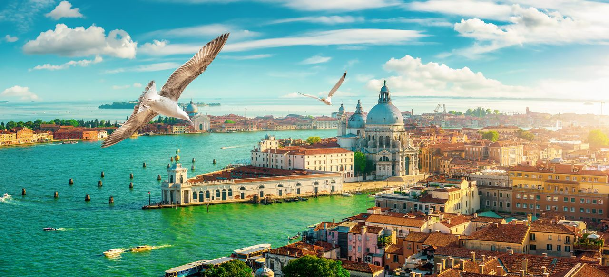

Italy is a country that has always been at the top of my travel bucket list. The allure of its rich history, world-renowned cuisine, and breathtaking landscapes drew me in, and this summer, I finally had the chance to explore this beautiful country. My journey through Italy was nothing short of magical, and I’m excited to share the highlights of my trip with you.
My Italian adventure began in Venice, a city that feels like it was plucked straight out of a fairytale. As I stepped off the plane and onto a boat (yes, a boat!), I was immediately captivated by the charm of Venice. The narrow canals, arched bridges, and stunning architecture made every turn feel like a postcard moment.I spent my days wandering through the maze-like streets, getting lost in the best way possible. The highlight of my time in Venice was a gondola ride along the Grand Canal at sunset. The soft glow of the evening light reflected off the water, creating a surreal atmosphere that I’ll never forget. I also visited the iconic St. Mark’s Basilica and Doge’s Palace, where the intricate details and history left me in awe.
After soaking in the beauty of Venice, I made my way to Florence, the heart of the Renaissance. Florence is a city that breathes art and history, and I could feel it the moment I arrived. The first thing I did was visit the Florence Cathedral, or the Duomo, which is an architectural masterpiece. Climbing to the top of the dome rewarded me with panoramic views of the city that were worth every step.The Uffizi Gallery was another highlight, where I had the chance to see works by Botticelli, Michelangelo, and Leonardo da Vinci up close. Florence’s art and culture are deeply intertwined, and it was incredible to experience it firsthand. In between museum visits, I indulged in gelato at every opportunity—because when in Italy, right?
No trip to Italy would be complete without a visit to Tuscany. The rolling hills, vineyards, and charming villages felt like a painting come to life. I stayed in a quaint farmhouse just outside of Siena, where the pace of life slowed down, allowing me to truly savor the beauty of the countryside.One of the highlights of my time in Tuscany was a wine tour in the Chianti region. I visited several family-owned vineyards, where I learned about the winemaking process and tasted some of the best wine I’ve ever had. The local food was just as impressive—fresh pasta, hearty bread, and of course, plenty of olive oil.I also took a day trip to the medieval town of San Gimignano, known for its well-preserved towers and stunning views. Walking through the cobblestone streets felt like stepping back in time, and I couldn’t resist picking up a bottle of the region’s famous Vernaccia wine to bring home.
My journey ended in Rome, a city that needs no introduction. Rome’s history is palpable in every corner, from the ancient ruins of the Colosseum to the grandeur of the Vatican City. I spent my days exploring the historic sites, marveling at the sheer scale and beauty of it all.The Colosseum was a highlight, where I could almost hear the echoes of ancient gladiator battles as I walked through the stone corridors. The Roman Forum and Palatine Hill provided even more insight into the city’s storied past. Of course, no visit to Rome would be complete without a visit to the Vatican. St. Peter’s Basilica left me speechless, and the Sistine Chapel’s ceiling was every bit as awe-inspiring as I had imagined.
As I boarded my flight home, I found myself already dreaming of my next trip to Italy. This country has a way of capturing your heart with its beauty, culture, and history. From the romantic canals of Venice to the rolling hills of Tuscany and the vibrant energy of Rome, Italy offers something for every traveler.If you’ve been considering a trip to Italy, my advice is simple: go. The memories you’ll create and the experiences you’ll have will stay with you forever. Until next time, arrivederci, Italy!